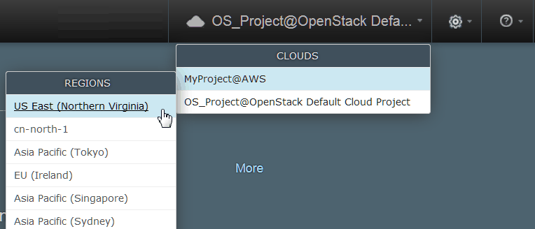
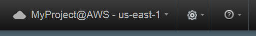

Provisioning environments from the blueprint designer (through OpenStack Heat)
If you connect to the target cloud through OpenStack Heat, you can provision an environment directly from the blueprint designer.
This method works only for blueprints that were created with the blueprint designer, not with blueprints that you create on the HCL® UrbanCode™ Deploy server.
- Connect to a cloud system.
- Create a blueprint and configuration file, and ensure that these files are appropriate for the target cloud system. Depending on your cloud system, see
- Modeling environments for SoftLayer
- Modeling environments for Amazon Web Services
- Modeling environments for VMware vCenter
- Modeling environments for VMware vRealize Automation
- Modeling environments for OpenStack and OpenStack-based clouds
- Modeling environments for Microsoft Azure.
- Modeling environments for Google Cloud Platform
- Confirm that you have access to the
ucd-agent-linux-ppc64,ucd-agent-linux-x86_64,ucd-agent-win-x86_64, anducd-agent-linux-s390xagent components. See Mapping teams to objects.
By default, when you provision an environment from a blueprint, the environment is created by using the cloud account information of its cloud project. However, when you create a blueprint for most kinds of clouds, you can specify different user credentials. See Providing cloud credentials in a blueprint.
-
Make sure that you are connected to the cloud project and region with which you want to provision the environment.Select the cloud project and region from the menu in the upper-right corner of the screen in the blueprint design server, as shown in the following figures. The region is either a geographical cloud location or a physical data center.

The cloud project and region are shown at the top of the screen, as shown in the following figure:

-
Open the blueprint, and then click Provision. The Provision Blueprint to new Environment window opens.
- In the Cloud Project field, select the cloud project.
- In the Cloud Region field, select the cloud region.
- In the Orchestration Provider field, select the orchestration provider.
- In the Environment Name field, specify the name of the environment.
-
In most cases, select a configuration file from the Configuration list. Configuration files are not necessary if you are deploying to OpenStack and OpenStack-based clouds. If you are deploying to any other supported cloud, you must use a configuration file. You can also create a configuration file by opening the Configuration list and clicking Create Configuration.
Note: If you do not select a configuration file, the blueprint is provisioned on the OpenStack server that is associated with your user account.
Click Set The Parameter Values For This Environment to show the parameters in the blueprint and the values in the configuration file. The window includes sections for parameter groups that are in the blueprint. To view parameter values, click the appropriate section name to open the section. The window also validates the blueprint and the configuration file. If the configuration file includes parameters that are not in the blueprint, then only the parameters that are in the blueprint are used.
-
Customize the parameter values in the window. The Provision Blueprint to new Environment window includes sections for parameter groups that are in the blueprint, such as Image Parameters, Network Parameters, and Agent Parameters. To view and change parameter values, click the appropriate section name to open the section. For example, for some clouds, click Image Parameters and then specify the zone for the environment in the Availability Zone field. To supply a value for a secure component resource property or secure component environment property, locate the property in the Agent Parameters section and specify the value in the Property name Secure Property field.
For some clouds, click Image Parameters and then specify the flavor for the environment images in the Flavor field. If the list of flavors does not contain the flavors that you expect, make sure that you registered the flavors with the cloud discovery service. See Configuring SoftLayer image flavors or Configuring VMware vCenter image flavors.
In most cases, you select an SSH key by name in the Key Name field under Image Parameters. However, for VMware clouds, paste the contents of the SSH public key in this field.
If you configured a cost center for the cloud, the Provision Blueprint to new Environment window shows the estimated cost for the environment. See the following information for Microsoft Azure:
- In the Admin User and Admin Pass fields, specify the name and password of the administrative user on the new virtual machines. The administrative user cannot be named
rooton a Linux™ system. Azure requires a complex password for the administrator account. - In the Availability Zone field, accept the default value. Selecting a different availability zone is not supported.
- In the Resource Group field, select the resource group for the new environment.
- In the Storage Account field, select the storage account for the new environment.
- If you change the parameters, you can save the changes to the configuration file by selecting the Save changes to configuration file check box. This check box is displayed only if you change parameters and are using a configuration file.
- Provision the environment.
- To validate all parameter values before you provision the environment, click Provision.
- To provision the environment without validating parameters, click Quick Provision .
- In the Admin User and Admin Pass fields, specify the name and password of the administrative user on the new virtual machines. The administrative user cannot be named
The new environment is displayed on the Environments page of the blueprint designer and in the list of application environments on the HCL UrbanCode Deploy server.
You can see the status of a specific environment by selecting it from the Show all environments list at the top of the page. When you provision a standalone Heat engine, the environment name is a combination of the orchestration provider name and the word "HEAT," such as Amazon (HEAT). When you provision an OpenStack engine, the environment name is a combination of the OpenStack cloud project name, the region, and the word "OPENSTACK," such as OpenStack - RegionOne (OPENSTACK).
To modify the images or the HCL UrbanCode Deploy components in a provisioned environment, update the blueprint and then click Apply.
Parent topic: Provisioning cloud environments